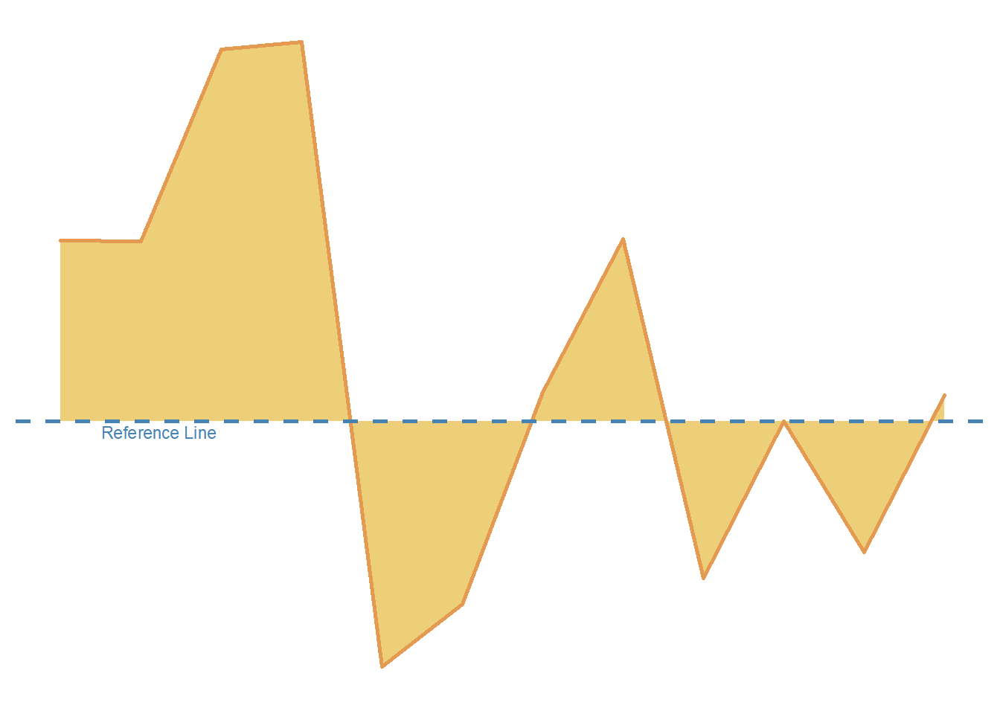

library(tidyverse) # untuk manupulasi, merapikan, & visualisasi data
library(gapminder) # untuk mengakses gapminder dataset
library(geomtextpath) # untuk membuat Line Texts_d_filled_line_df <- gapminder %>%
filter(continent == 'Asia') %>%
group_by(year) %>%
mutate(median_gdp = median(gdpPercap),
gdp_gap = gdpPercap - median_gdp) %>%
filter(country == 'Jordan')s_d_filled_line <- s_d_filled_line_df %>%
ggplot(aes(x = year,
y = gdp_gap)) +
geom_area(color ='#e59a52',
size = 1,
fill = '#edce79') +
geom_texthline(yintercept = 0,
label = 'Reference Line',
size = 3,
vjust = 1.2,
hjust = .1,
linewidth = 1,
linecolor = '#4682B4',
linetype = 2,
color = '#4682B4') +
scale_x_continuous(limits = c(1952, 2007),
breaks = seq(1952, 2007, by = 5)) +
theme_minimal() +
theme(
axis.title = element_blank(),
axis.text = element_blank(),
axis.line = element_blank(),
panel.grid.major = element_blank(),
panel.grid.minor = element_blank(),
panel.background = element_rect(fill = '#FFFFFF',
color = NA),
plot.background = element_rect(fill = '#FFFFFF',
color = '#FFFFFF')
)